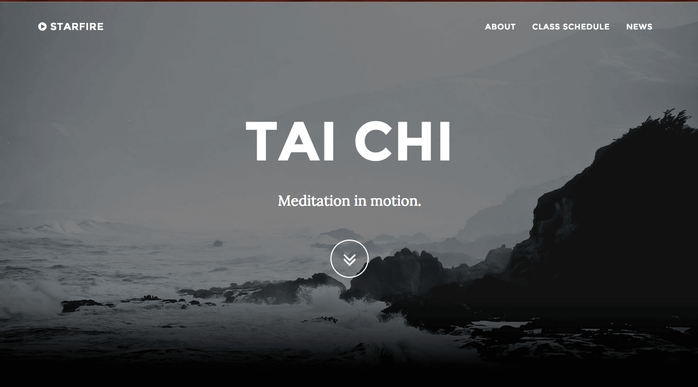
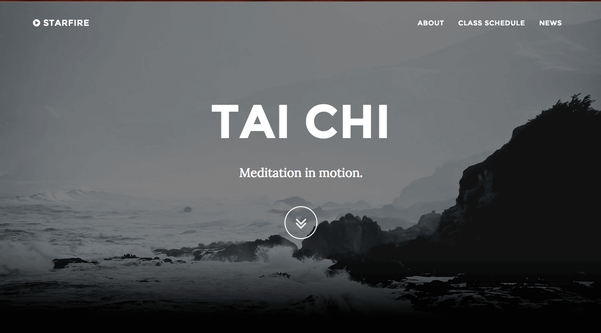

Selected works
A few things I get excited about
Creative Community
{ Salon (for) Literary, Artistic, Musical, & Movement Mash-ups }
Salon [səˈlän] n. 1. A periodic assembly of guests, particularly a gathering of literary, artistic, social, cultural, or intellectual distinction.
SLAMMM: Salon (for) Literary, Artistic, Musical, & Movement Mash-ups. My vision for this group is to be an open community in the Seattle area fostering the sharing of art, ideas, and passions, alongside the interactive blending of talents for new creative mashups. The only requirement to attend is bringing a “creative contribution” of your choice to share in a casual jam-setting (the opportunities are truly limitless here). Feel free to contact me for more details or if you'd like to stay in the loop. All are welcome!
Album Art Design
Create album cover artwork and graphic design edits for Oakland musician Mighty Quinn's latest releases and provide website updates for his site {iammightyquinn.com}.


Websites
[In Progress] Redesigning {www.wudangdanpai.com} with a more modern look (original site developed in 1999) with a brighter, simpler, more modern look, used to advertise internal Chinese martial arts classes in Seattle, WA.
New:
Old:
Redesigned {starfire.org} with a more modern look (original site developed in 1999), used to advertise tai chi classes in the East Bay of California. Webmaster and former assistant instructor.
New:

Old:

Developed {arpasophia.com} for a harpist to advertise her skills in Chicago.

Developed {whowillremember.com} for a film about the Armenian Genocide for a screenwriter in Sacramento Area.
New:
Old:
Redesigned {starfire.org} with a more modern look (original site developed in 1999), used to advertise tai chi classes in the East Bay of California. Webmaster and former assistant instructor.
New:

Old:
Developed {arpasophia.com} for a harpist to advertise her skills in Chicago.
Developed {whowillremember.com} for a film about the Armenian Genocide for a screenwriter in Sacramento Area.
Martial Arts
In March 2015, I competed in CMAT (the largest Chinese Martial Arts Tournament in the Western Hemisphere held in Berkeley, CA) and won a gold medal in my division performing the yang style tai chi short weapon fan form. In March 2016, I returned to CMAT to compete in the fan form again at a higher division both individually and in a group with Quinn Walker, winning a gold medal for each event. Currently, I am studying baguazhang, taijiquan, and qigong at the International Wudang Internal Martial Arts Academy and am a member of the demonstration team which regularly performs around Seattle, WA.
Links to demo videos:
{Yang Tai Chi Fan Form: Berkeley, CA}
{Wudang Qigong demo: Seattle Chinese Culture and Arts Festival}
{Wudang Bagua demo: Seattle Dragon Festival}
Links to demo videos:
{Yang Tai Chi Fan Form: Berkeley, CA}
{Wudang Qigong demo: Seattle Chinese Culture and Arts Festival}
{Wudang Bagua demo: Seattle Dragon Festival}
Academic Projects
A couple favorites from my time at UC Berkeley:
- Technology for Creativity and Learning sChemata: A 3D Digital Hand Gesture Recognition Tool for Studying 3D Concepts in Chemistry
- Music Cognition: The Impact of Familiar Music of Rhythmic Playback for Patients with Alzheimer's Disease